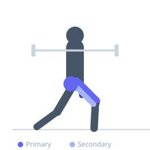
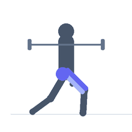

Exercise guide / Front-Rack Bulgarian Split Squat
Front-Rack Bulgarian Split Squat
A Bulgarian split squat performed with the barbell in the front rack position, resting on the front deltoids. This variation promotes a more upright torso than the back rack version and increases upper back and core stability requirements while heavily loading the working quadriceps and glutes.
Primary muscles
rectus femoris
vastus lateralis
vastus medialis
gluteus maximus
Secondary muscles
biceps femoris long head
gluteus medius
vastus intermedius
Stabilizers
transverse abdominis
erector spinae
Equipment
Standard Barbell
Power Rack (Squat Cage)
Flat Bench


Starting position
- Position a barbell in the front rack (resting on the clavicles and anterior deltoids). Stand in a split stance with the rear foot elevated on a bench.
Setup
- Set the barbell in a rack to shoulder height. Take the front rack position and walk back to position the rear foot on a bench.
Steps
- Step 1: Brace your core hard and keep elbows high to maintain the front rack position.
- Step 2: Lower the rear knee toward the floor by bending both knees.
- Step 3: Descend until the front thigh is at or below parallel, keeping the torso upright.
- Step 4: Drive through the front heel to return to the starting position.
Coaching cues
- Elbows stay high throughout
- Drive the front knee out over the pinky toe
Breathing
- Inhale and brace before the descent. Exhale on the ascent.
Range of motion
- Rear knee approaches the floor. Front thigh at or below parallel.
Tempo
- 3-1-2-0
Common mistakes
- Dropping the elbows, causing the bar to roll forward off the shoulders
- Allowing the front knee to collapse inward
Safety
- Front rack requires adequate wrist and shoulder mobility — do not force the position if mobility is limited
Training
- strength: 3–8 reps
- hypertrophy: 8–15 reps
- strength: 3–5 sets
- hypertrophy: 3–4 sets
- Rest: {'strength': 180, 'hypertrophy': 90}